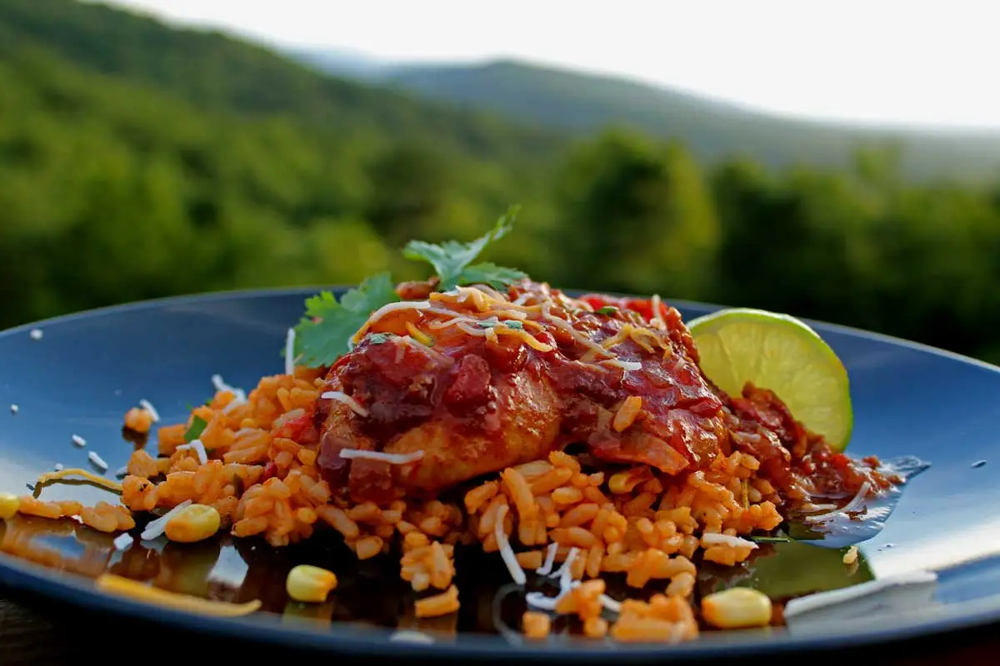

Mexican Deviled Chicken

Ingredients:
- 4 chicken thighs boneless-skinless
- 2 tablespoons extra virgin olive oil
- 1 large red onion chopped
- 2 Roma tomatoes chopped
- 6 cloves garlic minced
- 3 ½ ounces chipotle peppers in adobo sauce
- 1 cup chicken broth
- sea salt to taste
- 1-2 tablespoons fresh lime juice juice of ½ lime
Instructions
-
Heat the oil in a Dutch Oven or heavy pot, over medium-high heat. Add the onions and sauté until soft; about 5 to 7 minutes. Remove the onions from
the pot and add the chicken to the pot; brown on all sides.
-
While the chicken is browning, blend the chipotle peppers with the chicken broth using a hand blender or blender. Make sure there are no large
pieces of chipotles left; blend until smooth. This may take several minutes.
-
When the chicken has browned, add the onions back into the pot along with the garlic and tomatoes; season with salt, to taste. Cook for about 10 o
15 minutes.
-
Add chipotle-broth mixture, stir to combine well. Simmer over low heat uncovered for 30 minutes, or until the sauce has nearly halved and thickened.
The longer you simmer this sauce, the better it will be. You can make ahead of time just be sure to cover the pot with a lid after it has reduced.
- Before serving taste and adjust the salt as necessary. Squeeze in the lime juice; stir well to combine.
-
Serve with a nice Mexican rice, fresh avocado or use the chicken as a filling inside a tortilla with refried beans, cheese, sour cream and any other
topping you choose, to help balance out the spice.